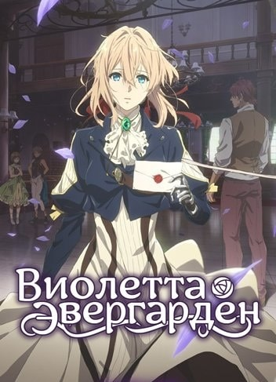
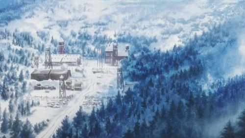
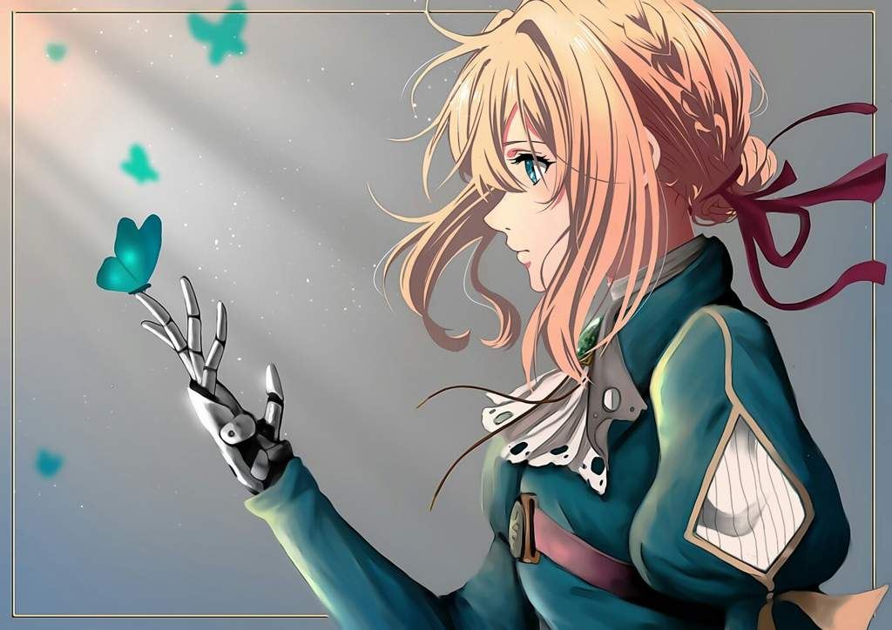
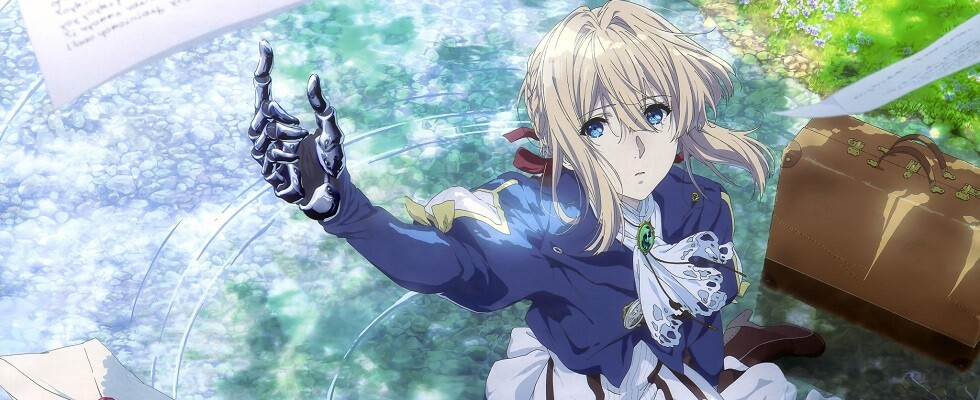

Violet Evergarden (яп. ヴァイオレット・エヴァーガーデン Байорэтто Эба:га:дэн, Вайолет Эвергарден) — ранобэ Каны Акацуки и иллюстратора Акико Такасэ. Аниме-адаптация ранобэ от студии Kyoto Animation транслировалась с января по апрель 2018 года. В июле 2018 года вышла дополнительная 14-я серия. Также планируется выпустить два полнометражных аниме-фильма: 1-й в сентябре 2019, 2-й в январе 2020.
Давным-давно профессор Орландо, влиятельная фигура в полиграфической промышленности, изобрел новую печатную машину для своей жены Молли, чтобы она могла писать романы после потери зрения. Машина получилась в виде небольшой прекрасной куклы. Вложив в своё изобретение сердце и надежды, профессор назвал его «самопишущая кукла» (яп. 自動手記人形 Дзидо: Сюки Нингё:). В конце концов, его изобретение стало широко распространено, облегчая жизнь многим людям. Теперь термин «самопишущая кукла» применяется к молодым и талантливым девушкам, чья работа заключается в том, чтобы облечь мысли в слова либо для большинства неграмотного населения, либо для большего красноречия написанного. В центре повествования Вайолет Эвергарден — молодая девушка, не помнящая ничего, кроме войны. Но противостояние, поделившее континент на северную и южную части, закончилось, и люди готовятся жить в новом времени. После серьёзных увечий, оставивших её без рук и разделивших с майором, Вайолет покинула поле боя и была взята под опеку Клаудией Ходжинсом, бывшим офицером армии Лейденшафтлиха, который после окончания четырёхлетней войны основал почтовую фирму «C.H.» в крупном портовом городе Лейден. Эта компания осуществляет регулярные почтовые пересылки и предоставляет услуги самопишущих кукол. Заинтересованная работой кукол Вайолет решает присоединиться к ним. Девушке предстоит встретить людей, испытывающих самые разные чувства и эмоции, узнать судьбу майора Гилберта Бугенвиллеи и понять смысл его последних слов, адресованных ей: «Я люблю тебя» (яп. 愛してる Айситэру).
   